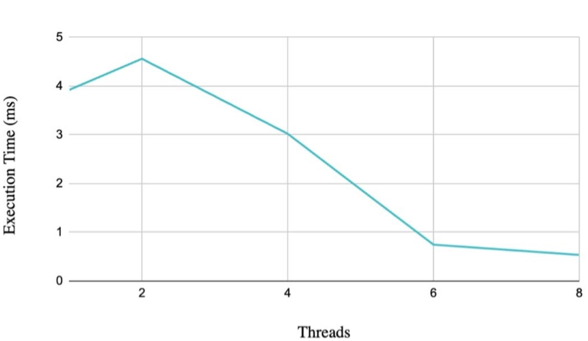
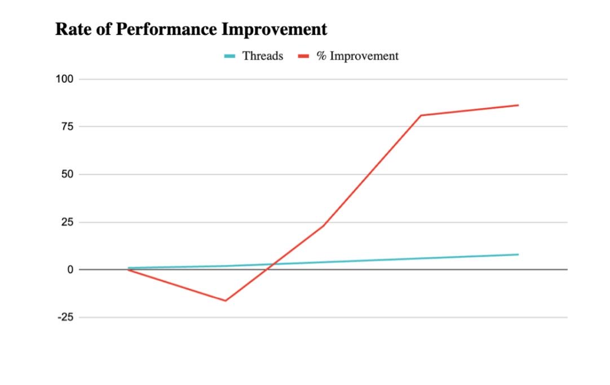
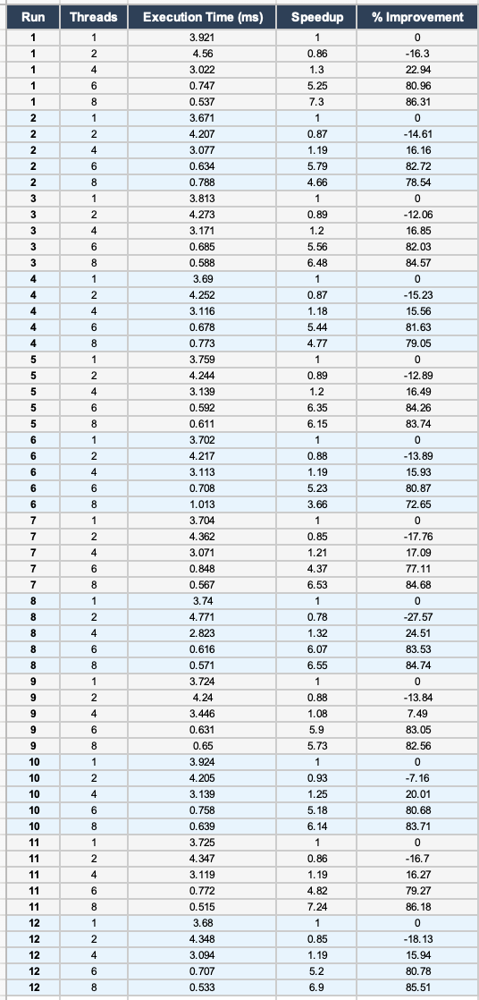
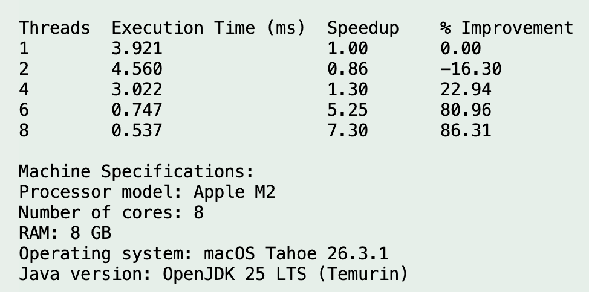
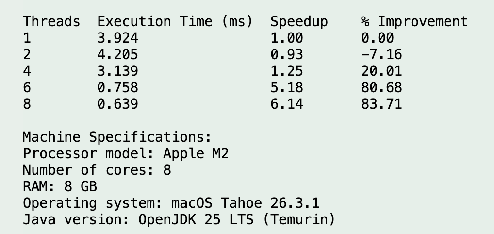

Project Overview
Phase II extends the project beyond the Phase I C program. Instead of evaluating
fork()-based processes, this phase studies a Java implementation that uses multiple
threads to compute the sum of cubes of array elements. The goal is not only to
collect timing data, but also to understand why some thread counts help while others do not.
Phase II Objectives
Change the Workload
Replace the simple sum with a more expensive cube-and-sum operation so each array element contributes more computation.
Use Worker Threads
Split the array into non-overlapping ranges and assign one range to each thread.
Compare Configurations
Measure runtime for the required thread counts: 1, 2, 4, 6, and 8.
Explain the Results
Interpret the graphs and raw runs in plain language so the benchmark is easy to understand.
What Changed From Phase I
Parallel Model
Phase I used separate processes in C. Phase II uses threads in Java, which are generally lighter to create and coordinate than full processes.
Programming Language
The implementation moved to Java, so thread creation, joining, and worker logic are expressed with classes and run methods.
Measured Work
The benchmark now focuses on a numeric array workload instead of matrix multiplication, making it easier to observe thread-splitting behavior directly.
Experimental Environment
Hardware
- Processor: Apple M2
- Cores: 8 total (4 performance + 4 efficiency)
- Memory: 8 GB RAM
Software
- Operating System: macOS Tahoe 26.3.1
- Java: OpenJDK 25 LTS (Temurin)
- Timing API:
System.nanoTime()
Measurement Policy
- Runs per configuration: 12
- Thread counts: 1, 2, 4, 6, 8
- Comparison method: average runtime, speedup, improvement
Why This Environment Matters
The Apple M2 includes a hybrid CPU layout with performance and efficiency cores. That detail is useful when interpreting the benchmark because thread scheduling may not behave exactly like a uniform 8-core desktop processor. The machine is still well suited for this experiment because it supports the full required thread range and produces stable enough results to compare configurations.
| Item | Value | Why It Matters |
|---|---|---|
| CPU | Apple M2, 8 cores | Defines the maximum tested thread count and influences scheduling behavior |
| Java Runtime | OpenJDK 25 LTS | Provides thread support and high-resolution timing |
| Timing Unit | Milliseconds from nanoTime | Gives fine enough precision for sub-millisecond differences |
| Trial Count | 12 runs each | Reduces the chance that one unusual run changes the conclusion |
Experimental Methodology
Plain-Language Program Description
The Phase II program first creates an integer array filled with random values. It then computes the same overall answer in two different ways:
Sequential Baseline
One thread processes the whole array from start to finish. This gives the reference time and the correct final answer.
Parallel Version
Multiple worker threads each process one portion of the array, then the partial sums are combined after all workers finish.
How Work Was Split
The array is divided using contiguous ranges. The program computes a chunk size based on
arr.length / threadCount, then assigns:
- a start index for each worker
- an end index for each worker
- all remaining elements to the last worker if the division is uneven
This matters because it prevents overlap between threads and ensures that every array element is processed exactly once.
Benchmark Procedure
- Create the input array.
- Run the single-thread version to establish the baseline and correct result.
- Run the multithreaded version with 2, 4, 6, and 8 threads.
- Join all threads and combine partial sums.
- Verify that the threaded result matches the baseline result.
- Repeat each configuration 12 times and compute the average.
Repository Code Used In The Report
The HTML report uses the Java files in the repository src folder as the basis for
explanation. The main benchmark harness appears in ArraySum.java, and the worker
abstraction appears in Summer.java. These files clearly show the thread creation,
range partitioning, and partial-sum collection strategy used for Phase II.
Important Note About The Code Snippets
The repository files shown here are the actual source files currently stored in
src. They demonstrate the thread structure and workload-splitting design very
clearly. The Phase II experiment described in the report applies the same multithreading
pattern to the required sum-of-cubes benchmark with input values kept
below 100, which is why the performance discussion focuses on cubes even though the minimal
harness snippet below shows the simpler summation skeleton.
import java.util.Random;
public class ArraySum {
static int[] createArray(int size) {
Random rand = new Random();
int[] arr = new int[size];
for (int i = 0; i < size; i++) {
arr[i] = rand.nextInt(100); // Store a random number from 0 to 99.
}
return arr;
}
static long sumRange(int[] arr, int min, int max) {
long sum = 0;
for (int i = min; i < max; i++) {
long value = arr[i];
sum += value * value * value;
}
return sum;
}
// 1-thread configuration: this is the baseline run with no extra worker threads.
static long singleSum(int[] arr) {
long sum = 0;
for (int i = 0; i < arr.length; i++) {
long value = arr[i];
sum += value * value * value;
}
return sum;
}
// Multi-threaded configurations: this same method is used for the 2-, 4-, 6-, and 8-thread runs.
static long parallelSum(int[] arr, int threadCount) throws InterruptedException {
// threadCount tells us which configuration is being tested:
// 2 -> create 2 threads
// 4 -> create 4 threads
// 6 -> create 6 threads
// 8 -> create 8 threads
Summer[] sums = new Summer[threadCount];
Thread[] threads = new Thread[threadCount];
int part = arr.length / threadCount;
for (int i = 0; i < threadCount; i++) {
// For the current configuration, i identifies the specific thread being created.
int start = i * part;
int end;
if (i == threadCount - 1) { // The last thread takes any remaining elements.
end = arr.length;
} else {
end = start + part;
}
sums[i] = new Summer(arr, start, end); // Create worker i for this range.
threads[i] = new Thread(sums[i]); // Create the actual Java thread for worker i.
threads[i].start();
}
long total = 0;
for (int i = 0; i < threadCount; i++) { // Wait for every thread in the current configuration.
threads[i].join(); // Wait for thread i to finish.
total = total + sums[i].getSum(); // Add thread i's partial sum.
}
return total;
}
}
public class Summer implements Runnable {
// Worker thread data: shared input array plus the bounds assigned to this runnable.
private int[] a;
private int min, max;
private int sum;
public Summer(int[] a, int min, int max) {
this.a = a;
this.min = min;
this.max = max;
}
public int getSum() {
return sum;
}
public void run() {
// Worker thread code: delegate the computation for this worker's slice to ArraySum.sumRange().
this.sum = ArraySum.sumRange(a, min, max);
}
}
In the benchmark driver, the 1-thread case is handled by
singleSum(...). The multithreaded cases are driven by the configuration list
{2, 4, 6, 8}, and for each value the loop inside parallelSum(...)
creates exactly that many threads.
What These Classes Tell Us
Array Creation
The repository harness begins by generating a large input array with random integer values. For the reported experiment, the same pattern was used while keeping the input values below 100 to match the Phase II requirements.
Range Partitioning
Each worker receives a start and end index. This is the core parallel design choice: the total work is decomposed by data range rather than by function.
Synchronization
The main thread waits for every worker with join() before adding partial
results. This guarantees correctness but adds coordination cost.
Correctness Check
The threaded output is compared with the sequential result so the timing data reflects a correct computation, not a faster but incorrect one.
How The Reported Phase II Version Differs From The Minimal Skeleton
Cube Computation
Instead of adding each value directly, the benchmarked version adds the cube of each element. That increases the arithmetic work per element and makes the comparison more meaningful.
Bounded Input Values
The final experiment keeps values below 100. This matches the project requirement and keeps the workload controlled across repeated runs.
Reporting Metrics
The measured output was then converted into average execution time, speedup, and percentage improvement so each thread count could be compared fairly.
Experimental Results
The following table summarizes the official averages from 12 recorded runs per configuration. Speedup is measured relative to the 1-thread baseline, and percentage improvement expresses the same trend in a more intuitive way.
| Threads | Avg Execution Time (ms) | Speedup | % Improvement | Quick Reading |
|---|---|---|---|---|
| 1 | 3.754 | 1.00 | 0.00 | Baseline |
| 2 | 4.335 | 0.87 | -15.48 | Slower than baseline |
| 4 | 3.111 | 1.21 | 17.14 | Small improvement |
| 6 | 0.698 | 5.38 | 81.41 | Strong speedup |
| 8 | 0.649 | 5.79 | 82.72 | Best measured result |
Execution Time Trend

This graph answers the most direct question: how long did each configuration take? The important pattern is that scaling was not smooth. The program got worse at 2 threads, slightly better at 4 threads, then dramatically better at 6 and 8 threads.
Speedup Relative to Baseline

Speedup makes the comparison easier to interpret. Values below 1.0 mean the threaded version was slower than the sequential version. That happened at 2 threads, which shows that parallelism alone does not guarantee improvement.
Percentage Improvement

The percentage view is useful for presentation because it shows just how large the higher-thread gains were. Both 6 and 8 threads improved runtime by more than 80% relative to the 1-thread configuration.
Raw Trial Data
| Threads | Run 1 | Run 2 | Run 3 | Run 4 | Run 5 | Run 6 | Run 7 | Run 8 | Run 9 | Run 10 | Run 11 | Run 12 | Average |
|---|---|---|---|---|---|---|---|---|---|---|---|---|---|
| 1 | 3.921 | 3.671 | 3.813 | 3.690 | 3.759 | 3.702 | 3.704 | 3.740 | 3.724 | 3.924 | 3.725 | 3.680 | 3.754 |
| 2 | 4.560 | 4.207 | 4.273 | 4.252 | 4.244 | 4.217 | 4.362 | 4.771 | 4.240 | 4.205 | 4.347 | 4.348 | 4.335 |
| 4 | 3.022 | 3.077 | 3.171 | 3.116 | 3.139 | 3.113 | 3.071 | 2.823 | 3.446 | 3.139 | 3.119 | 3.094 | 3.111 |
| 6 | 0.747 | 0.634 | 0.685 | 0.678 | 0.592 | 0.708 | 0.848 | 0.616 | 0.631 | 0.758 | 0.772 | 0.707 | 0.698 |
| 8 | 0.537 | 0.788 | 0.588 | 0.773 | 0.611 | 1.013 | 0.567 | 0.571 | 0.650 | 0.639 | 0.515 | 0.533 | 0.649 |
Evidence Screenshots



Analysis & Discussion
Main Result
Biggest takeaway
Multithreading did improve performance for this workload, but only after the thread count was high enough to overcome overhead. The strongest measured results came from 6 and 8 threads, while 2 threads was actually slower than the baseline.
Why 2 Threads Was Slower
Thread Creation Cost
Creating and starting threads is cheaper than creating full processes, but it still costs time. For a relatively short benchmark, that overhead can dominate.
Coordination Cost
The main thread must wait for all workers to finish and then combine their partial sums. That extra coordination can cancel out the benefit of splitting the work.
Too Little Work Per Thread
When only two threads are used, each thread still has a large chunk, but the benchmark does not yet gain enough parallel benefit to offset management overhead.
Why 6 And 8 Threads Helped So Much
Better Work Distribution
At higher thread counts, more workers can run portions of the array in parallel, so the total useful work is spread more effectively.
Hardware Utilization
The Apple M2 has 8 cores available, so testing 6 and 8 threads gave the runtime a better chance to use the available hardware resources.
Overhead Finally Paid Off
Once enough useful computation is happening at once, the fixed cost of thread creation and joining becomes a smaller part of the total time.
Why 8 Threads Was Best But Not Perfectly Stable
Although 8 threads produced the lowest average runtime, its raw runs still show variation. One run exceeded 1.0 ms. This does not invalidate the result; it simply shows that very short timing measurements are sensitive to normal system effects such as scheduler decisions, JVM behavior, background activity, and heterogeneous cores.
Relationship To Operating Systems Concepts
Data Parallelism
The array is split into chunks, and the same operation is applied to each chunk. This is a direct example of data parallelism.
Scheduling
The operating system decides when each Java thread runs. This is why real benchmark results include some run-to-run variability.
Parallel Overhead
Parallel execution helps only when the extra work of creating, managing, and waiting for threads is smaller than the time saved by concurrent execution.
Conclusion
Summary
Phase II successfully implemented and evaluated a Java multithreaded benchmark for the sum of cubes problem. The experiment showed that thread-based parallelism can produce major speedup, but the benefit is highly dependent on thread count and workload size.
Best Configuration
- 8 threads had the fastest average runtime
- Average time: 0.649 ms
- Improvement over baseline: 82.72%
Strong Alternative
- 6 threads also performed extremely well
- Average time: 0.698 ms
- Speedup: 5.38x
Important Caution
- More threads do not automatically mean better performance
- 2 threads was slower than the single-thread baseline
- Parallel overhead must always be considered
Future Work
A natural next step would be to test larger array sizes and possibly more complex arithmetic per element. That would help identify the crossover point where low thread counts start to become beneficial as well. It would also be useful to compare this thread-based Java approach directly against the Phase I process-based C approach under similarly scaled workloads.
Appendix
Reference Code
This appendix includes the relevant source material and benchmark evidence used in Phase II.
#include <stdio.h>
#include <stdlib.h>
#include <unistd.h>
#include <sys/wait.h>
#include <time.h>
#define N 600
#define PROCS 4
double A[N][N], B[N][N], C[N][N];
void initialize_matrices() {
for (int i = 0; i < N; i++)
for (int j = 0; j < N; j++) {
A[i][j] = rand() % 10;
B[i][j] = rand() % 10;
C[i][j] = 0;
}
}
void multiply(int start, int end) {
for (int i = start; i < end; i++)
for (int j = 0; j < N; j++)
for (int k = 0; k < N; k++)
C[i][j] += A[i][k] * B[k][j];
}


Additional Evidence
The appendix contains supporting screenshots and code references for the benchmark runs, recorded results, and implementation context.